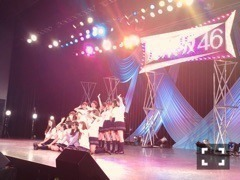
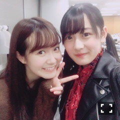

| 2017/12 12 Tue | ひめたん-0o0-その730 |
来年1月10日発売のアンダーアルバム
「僕だけの君～Under Super Best～」
の中にソロ曲を収録させて頂きました。
「自分のこと」という曲です。
あたたかい、私らしい詞です。
秋元先生からの愛を
感じています＼(^o^)／
ドキュメンタリー映像の監督は
君僕でお世話になった山田篤宏監督。
所縁のある映像チームの皆さんと
和気あいあいとした現場でした。
アンダーアルバムについて
少しだけ語らせて下さい。
左胸の勇気
狼に口笛を
涙がまだ悲しみだった頃
春のメロディー
13日の金曜日
扇風機
生まれたままで
ここにいる理由
あの日僕は咄嗟に嘘をついた
君は僕と会わない方がよかったのかな
別れ際、もっと好きになる
嫉妬の権利
不等号
アンダー
自由の彼方
欲望のリインカーネーション
オリメンとして歌いました。
これだけの曲に携われて嬉しい反面、
素直に喜べない自分がいた時期もあります。
でも、今、こうして羅列してみて
一つ一つに思い出があるし
やっぱり誇りだ！！！
毎回、アンダー曲も表題に
全然負けてなくね？という声があったの
めちゃめちゃ嬉しかったんです。
だからこの楽曲達がメインで
アルバムになるって凄く感慨深い。
日の目を見て良かったね～って親心です。

「自分のこと」は今週17日の
らじらー！サンデー内で
初解禁します～～聴いてにゃ～～

みり愛と葉月のSHOWROOMに
ゲリラで少しだけお邪魔しました～
放送中に通りがかったのでつい。
可愛い後輩達です。
みり愛も葉月も
頭の回転早い系アイドルだと
なんとなく思います(^0^)ステキ
東京ドームライブ
アンダーライブ九州シリーズ
のぎ天、工事中、AKB48SHOW! etc
映像流して頂けて感謝です( ˃ ˂ )
TopYell 1月号にて
ラストインタビューしてきました！
連載約2年間お世話になりました☆

12月末まで
ブログモバメお付き合い下さい！
(＊´・ω・＊)
コメント(1052)
2017/12/12 09:24